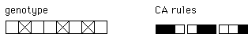
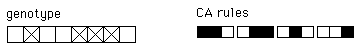
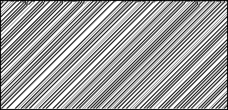
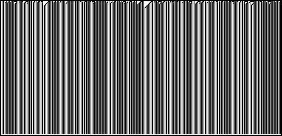

| Like crossover,
mutation is a
genetic operator. It randomly flips the bits of a an offspring's genotype. For example,
one mutation of the CA |
|  |
| can give rise to the CA |
|  |
| The first produces this from a random initial distribution. |
 |
| The second produces this from a random initial distribution. |
 |
|
| Why include mutation in the genetic algorithm? |
| Mutation prevents the population from homogenizing in a
particular gene. If every proposed solution has a "yes" answer to the first
classifier system question, then crossover will never change this answer. |